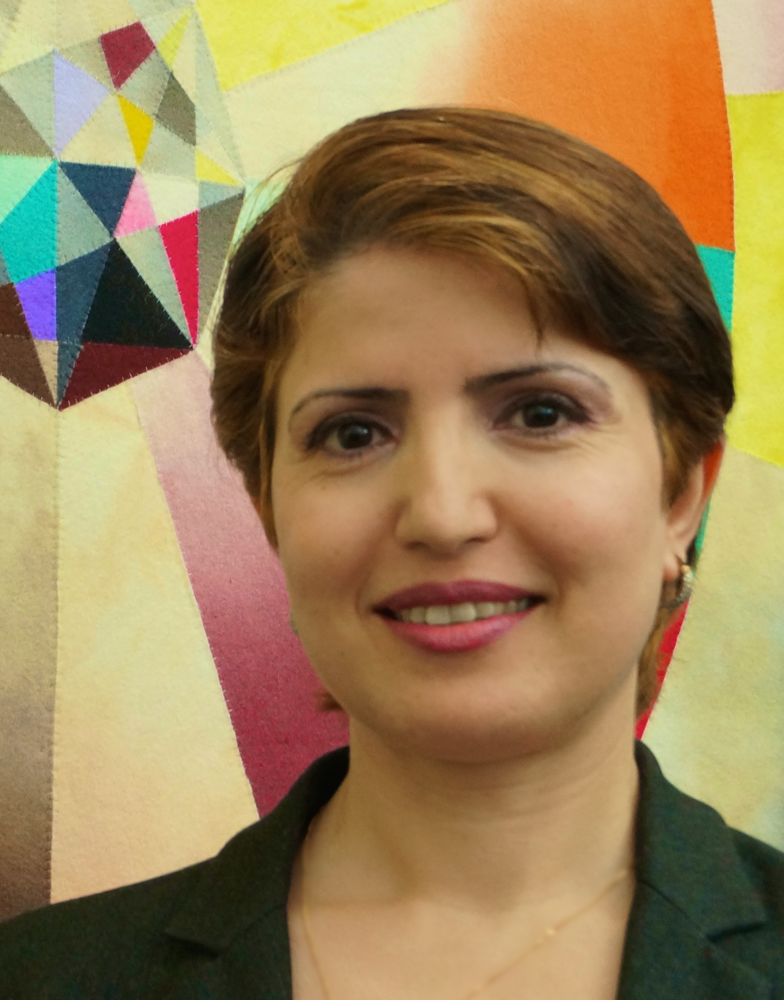

Each year the Fellowship of Reconciliation (FOR) bestows three peace awards - international, national, and local - to individuals or organizations whose commitment to peace and justice is recognized as extraordinary. This week, the 2014 international award was presented to Dr. Widad Akrawi.
The International Pfeffer Peace Award was established in 1989 by Leo and Freda Pfeffer to particularly honor those around the world working for peace and justice. Leo Pfeffer was the United States’ leading theoretician on religious liberty and the separation of church and state, and he argued these constitutional issues before the Supreme Court. A long-time FOR member, Leo was a founding member of the Jewish Peace Fellowship. Leo died in 1993 and Freda died in 2013, but their legacy continues to contribute to a more peaceful society.
Dr. Widad Akrawi, a Danish citizen of Kurdish ancestry, is considered one of Scandinavia’s most successful female human rights defenders and peace advocates. She is a global health expert, author, lecturer, lobbyist, as well as the co-founder and president of Defend International - a nongovernmental organization devoted to peace, democracy, diplomacy, human rights, and medical research.
As an outspoken peace activist, Dr. Akrawi was forced to leave the Kurdistan region of Iraq after first Gulf War in 1991. She sought political asylum in Denmark, where she established citizenship and became a student, earning a master's degree in genetics and a Ph.D. in international health and cancer epidemiology.
Dr. Akrawi was the first young woman of Middle Eastern descent to advocate a ban on the illicit trade of small arms and light weapons. She has campaigned against gender-based violence, torture, and other human rights abuses; and is an advocate of chemical and biological disarmament, conventional disarmament, and international peace and security.
Among her many accomplishments, Dr. Akrawi has created momentum in favor of a U.N. resolution on a strong and an effective Arms Trade Treaty to prevent the illicit trade in small arms and light weapons that might be used for acts of genocide, crimes against humanity, or terrorism. She has also spoken out against armed gender-based violence. She successfully lobbied for the U.N. Declaration of Commitment to End Sexual Violence in Conflict. In 2013, she was successful in her efforts to help pass U.N. Resolution 2117 dedicated to halting illicit transfer, destabilizing accumulation, and misuse of small arms and light weapons around the world.
Dr. Akrawi was the recipient of the 2013 “Special Prize” awarded by the National Organization for Future Generations, based in Algeria, for her passionate campaign to bridge the gap between civilizations and cultures. The Special Prize is significant because it honors exceptional leaders in the Middle East and North Africa region who have made valuable contributions to humanity by promoting a culture of coexistence and harmony.
.jpg) The 2014 International Pfeffer Award was presented to Dr. Akrawi on Monday, October 13, at an event arranged at the Oslo Peace House by Trond Gunnar Rasmussen of FOR Norway. Rev. Lucas Johnson, International Coordinator for the International Fellowship of Reconciliation, presented the award on behalf of FOR-USA with members of FOR Norway attending. Dr. Akrawi dedicated the peace award to all victims of persecution, particularly the Yazidis, Christians, and all residents of Kobane region. (See Dr. Akrawi's statement in support of Kobane during a demonstration in Oslo, Norway on October 15th.) The 2014 International Pfeffer Award was presented to Dr. Akrawi on Monday, October 13, at an event arranged at the Oslo Peace House by Trond Gunnar Rasmussen of FOR Norway. Rev. Lucas Johnson, International Coordinator for the International Fellowship of Reconciliation, presented the award on behalf of FOR-USA with members of FOR Norway attending. Dr. Akrawi dedicated the peace award to all victims of persecution, particularly the Yazidis, Christians, and all residents of Kobane region. (See Dr. Akrawi's statement in support of Kobane during a demonstration in Oslo, Norway on October 15th.)
In a gracious acceptance speech she said, “As the first Scandinavian woman, the third European citizen, and the first woman born in Kurdistan at the heart of Mesopotamia, I am particularly honored. But I wouldn't be standing here without the blood, sweat, and tears of the many human rights defenders, peace advocates, civil society activists, and my other fellow lobbyists. It has been a true honor to collaborate with such brilliant personalities.”
.jpg)
Congratulations, Dr. Widad Akrawi! We are inspired by you and your work to promote a culture of peace.
Deepest gratitude to FOR Norway, Trond Gunnar Rasmussen (far right), and Reverend Lucas Johnson (left) for celebrating Dr. Akrawi and presenting the Pfeffer Award on behalf of FOR-USA.
** Photo of Dr. Akrawi courtesy of Dr. Widad Akrawi and Defend International; photos of gathering in Oslo courtesy of Trond Gunnar Rasmussen. |